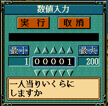

void カスタム::On_数値入力ダイアログ決定時(string メッセージ, 数値入力ダイアログパラメタ型 パラメタ ) {
}

void カスタム::On_数値入力ダイアログ決定時(string メッセージ, 数値入力ダイアログパラメタ型 パラメタ ) {
デバッグ出力 << メッセージ << endl;
デバッグ出力 << "最小値" << パラメタ.最小値 << endl;
デバッグ出力 << "最大値" << パラメタ.最大値 << endl;
if ( パラメタ.入力値 == 0xFFFF ) {
デバッグ出力 << "入力はキャンセルされた" << endl;
} else {
デバッグ出力 << "入力値" << パラメタ.入力値 << endl;
}
}